Statistiques descriptives
Dataviz interactives, indicateurs statistiques et interprétations.
Outre leurs caractéristiques physiques, qu'est-ce qui distingue les femmes des hommes ? Quelle est la "femme type" d'AdopteUnMec ? De quoi dépend la popularité d'une femme ? Quelles sont les qualités les plus recherchées chez les hommes ? Nous nous proposons de répondre ici à ces questions.
Comparaison hommes VS femmes
On se doute que le profil des visiteurs diffère d'un site de rencontre à l'autre : AdopteUnMec, Tinder, CougarAvenue, Rencontreagriculteur, etc. Encore faut-il pouvoir se faire une idée de la population féminine...et de la concurence masculine.Toutes les variables
| Les hommes viennent de Mars... | ...les femmes de Venus | |||||
| 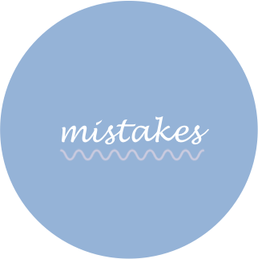Fautes description | Tabac / Alcool | Piercing / Tatoo | 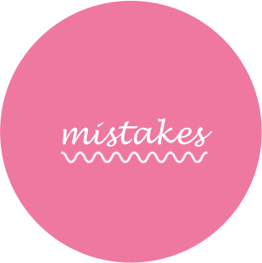Fautes description | 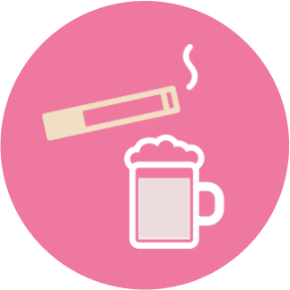Tabac / Alcool | 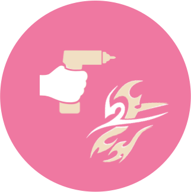Piercing / Tatoo | |
| Complétion du profil | 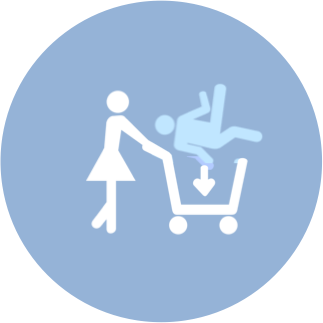Mails | Type de contrat recherché | Complétion du profil | Charmes | Accessibilité | |
| Poids | 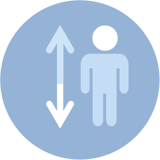Taille | 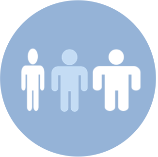IMC | Poids | 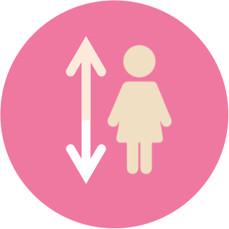Taille | 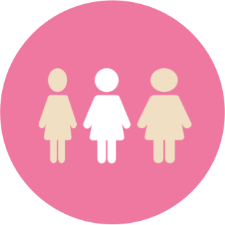IMC | |
Autre surprise : un homme qui contacte une femme en aura globalement approché 123 autres sur le même site ! Il ne faut donc pas espérer rencontrer la perle rare du premier coup. Le site annonce d'ailleurs une moyenne de 6 mois pour tomber sur la bonne personne (source). De plus, une femme tirée au hasard s'est déjà fait "charmée" 193 fois en médiane, conférant au site des allures de compétition. Cela est confirmé par le pourcentage de réponses aux mails envoyés par les hommes : en moyenne, seulement 1 mail sur 10 trouvera réponse.
Les femmes se dévoilent avec des descriptions en moyenne de 15 mots inférieurs à celles des hommes. Peut-être sont-elles moins motivées que les hommes pour faire des rencontres sur Internet ? Cette hypothèse est réaliste si l'on tient compte du fait qu'une femme a un accès gratuit au site, quand les hommes déboursent de l'ordre de 30€/mois, gage d'une certaine motivation. Le fait qu'elles fassent moins attention à leur orthographe corrobore cette supposition.
Les femmes sont plus nombreuses à se faire tatouer et à porter des piercings. Leur consommation d'alcool est inférieure à celle des hommes, mais elles sont plus nombreuses à se revendiquer "pillier de bar". Sans surprise, elles mesurent et pèsent moins lourd que leurs homologues masculins, d'où un IMC médian également moindre.
Podiums de comparaison des jobs, hobbies et sports
| Les jobs les plus représentés... | ||
| Côté homme | Côté femme | Si les étudiant(e)s et les ingénieur(e)s sont des professions bien représentées chez les deux sexes, on notera que les femmes sont davantage tournées vers le milieu médical que les hommes. |
| Les hobbies préférés... | ||
| Côté homme | Côté femme | Pas de différence notable en ce qui concerne les loisirs, même si la pratique d'un sport régulier est plus courante chez les individus masculins. |
| Les sports les plus pratiqués... | ||
| Côté homme | Côté femme | Le running semble être un sport unisexe ! Le fitness est - dans les grandes lignes - l'équivalent féminin de la musculation. Les hommes sont plutôt foot, là où les femmes s'adonnent volontiers aux activités cyclistes et de natation. |
Comment se qualifient les femmes ?
La population féminine d'AdopteUnMec est donc essentiellement taquine, sensible et féminine. Le terme
Les hommes sportifs pullulent sur AdopteUnMec ! Une femme à la recherche d'un compagnon sociable ou ambitieux devrait trouver son compte sans problème. Pour dénicher un ninja, en revanche, mieux vaut changer de site...
Séries télévisées préférées par sexe

 "Game of Thrones" est l'incontestable série gagnante chez les deux sexes, pour les 19-27 ans. Les quatre séries ayant le plus de succès plaisent aux téléspectateurs quelque soit leur sexe.
Certaines séries ont la préférence des hommes ("Vikings", "Walking Dead"). D'autres sont surtout l'apanage des femmes ("New Girl", "Homeland"),
"Game of Thrones" est l'incontestable série gagnante chez les deux sexes, pour les 19-27 ans. Les quatre séries ayant le plus de succès plaisent aux téléspectateurs quelque soit leur sexe.
Certaines séries ont la préférence des hommes ("Vikings", "Walking Dead"). D'autres sont surtout l'apanage des femmes ("New Girl", "Homeland"),
Ce que veulent les femmes
Il est intéressant de savoir ce qu'attend une jeune femme d'un homme en 2018.Mots-clés des descriptions
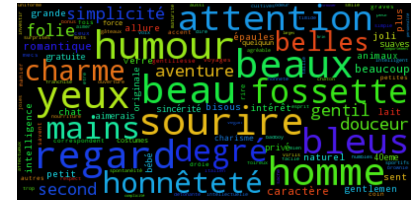
L'analyse des mots clés des "shopping listes" des clientes révèle que l'humour fait fureur, surtout lorsqu'il est associé avec un beau regard et un sourire à fossettes.
L'honnêteté est la première qualité non-physique qui ressort, loin devant l'intelligence, le sens de l'aventure et le romantisme.
Donner de l'attention fait également gagner des points aux messieurs.
Plus marginalement, aimer les animaux et en particulier les chats est de bon ton.
Dommage que les qualités culinaires ne soient pas représentées ! ☹
Symétriquement, les mots clés afférant à ce que les demoiselles fuient chez les hommes sont représentés ci-contre.
Les machos menteurs, hypocrites, irrespectueux et méchants n'ont qu'à bien se tenir !
L'infidélité n'est que peu mentionnée comme rédhibitoire, mais peut-être est-ce là une condition trop évidente pour être rédigée ^^.
Notons toutefois que les réponses données à la question "que fuyez-vous chez un homme ?" sont peu nombreuses. Ce nuage de mots clés est donc moins interprétable que le premier.
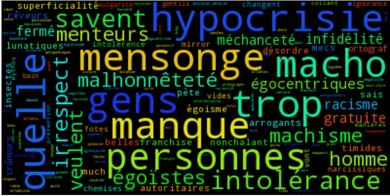
Préférences capillaires
L'attractivité d'un homme est mesurée en nombre de mails, c'est à dire de contacts établis avec des femmes du site. Cinq groupes d'effectifs égaux discétisent le nombre de mails échangés au sein d'une variable "étoiles". Le nombre modal d'étoiles est représenté ci-dessous pour chaque combinaison couleur+style de cheveux.| Bruns | Châtains | Blonds | Roux | Noirs | |
| Courts, raides | |||||
| Longs, bouclés |
|
||||
| Frisés, afro |
Couleur des yeux
Si l'on s'intéresse à la couleur des yeux, on constate que les yeux marrons et noirs recoivent légèrement moins de réponses à leur mails (avec pour ces derniers une incertitude liée à leur plus faible effectif). De plus, les yeux noisettes et verts dominent : ainsi s'éteint le mythe des yeux bleus...Styles préférés des femmes
Selon votre style vestimentaire, auriez-vous du succès sur AdopteUnMec ?L'examen de la distribution des étoiles pour les principaux styles nous apprend que :
- Les styles "BCBG" et "chic" rencontrent le plus de succès auprès des femmes du site
- Une large part des hommes se décrivent comme "décontractés". Ce style semble ne pas avoir d'impact sur le nombre de mails échangés avec les internautes.
- Les styles "rock", "geek"" et "à l'arrache" sont peut-être à éviter pour qui souhaite faire de nombreuses rencontres...
Attention : beaucoup de femmes ne renseignent pas ce qu'elles recherchent sur le site. Et parmi celles qui le font, n'oublions pas qu'une femme ne dit jamais tout ce qu'elle attend...
Autres curiosités statistiques
Matrice de corrélation
Le corrélogramme suivant rend compte des variables linéairement corrélées. Par exemple, le "64" sur la première ligne nous apprend que plus une femme reçoit de charmes*, plus elle reçoit de mails.* Un "charme" est une demande de mise en relation adressée à une femme. Si la femme est intéressée, le charme devient un mail, c'est-à-dire un flux d'échanges. Premier point notable, le nombre de charmes que reçoit une femme décroît selon son identifiant unique. Cela est en fait très logique : les identifiants sont attribués dans l’ordre croissant, selon le jour de l’inscription. les identifiants les plus grands témoignent d'un profil récent, qui n'a pas eu le temps d'accumuler autant de charmes que les profils anciens (avec un identifiant plus petit).
Le port d'un tatouage est corrélé avec celui d'un piercing, les deux pouvant s'interpréter comme une recherche d'originalité. Ces deux variables sont fonctions décroissantes du label (score binaire d'intérêt pour un profil) : cela signifie que les marquages corporels rebutent l'utilisateur du programme.
L'accessibilité d'une femme croît proportionnellement à son IMC, alimentant la triste idée qu'une femme avec quelques kilos au dessus de la moyenne doit revoir à la baisse ses exigences...sur cet échantillon du moins.
Cet histogramme admet une queue de distribution étonnament élevée à gauche. Comment peut-il y avoir plus de femmes de 30kg que de femmes de 65kg ? C'est simple : AdopteUnMec applique une valeur par défaut de 30kg lorsque le poids n'est pas renseigné par la femme.